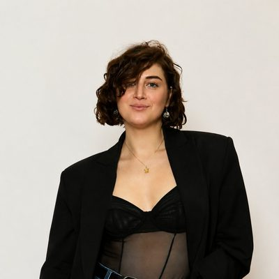

Де гроші — незрозуміло
Дохід добрий, а в кінці місяця не скажеш, куди все пішло.
«Ми працюємо більше, ніж будь-коли… але не розуміємо, де наші гроші»
BRAVE Capital — ательє персональних фінансів
Радник BRAVE будує з вами систему, у якій видно всі ваші гроші. Ви знаєте, скільки можна витратити без шкоди планам, у вас є резерв і гроші під цілі, а вільні кошти працюють за планом. Рутину веде радник, рішення — ваші.
Для тих, хто добре заробляє — у власному бізнесі, на керівній посаді чи на своїй практиці. Працюємо онлайн, з клієнтами в різних країнах.
10 питань · лише кнопки · без сум




Від 4 500 $ до 37 000 € на місяць — такий дохід був на старті у клієнтів з наших кейсів. Питання в усіх однакові: де гроші, скільки можна витратити і що робити з рештою.
02Як це буває
Так описують свої фінанси люди з дуже різним доходом — від IT-керівника в найманні до подружжя з бізнесом на мільйон. І майже кожен уже пробував навести лад самостійно: таблиця, застосунок, нове правило. Вистачало на місяць-два.
Дохід добрий, а в кінці місяця не скажеш, куди все пішло.
«Ми працюємо більше, ніж будь-коли… але не розуміємо, де наші гроші»
Заробляєте достатньо, але немає суми, про яку точно знаєте: її можна витратити спокійно.
«Я хочу відчути більше свободи і дозволити собі великі чеки… але не знаю, з чого почати»
Відкладено чимало, але незрозуміло, скільки з цього резерв, а що могло б працювати.
«Є кеш — що з ним робити?»
Або здається, що для цього треба більше грошей. Або вже пробували самі — і тепер не знаєте, що з цим робити.
Так було в IT-керівника: купив акції на піку 2021-го, і до 2023-го портфель був у мінусі.з історії клієнта BRAVE
Дохід є, а навіщо рости далі — незрозуміло. Сили йдуть на те, щоб тримати все в голові.
Так було в девелопера: працював «по інерції» і не бачив, навіщо заробляти більше.з історії клієнта BRAVE
Проблема не в доході, а в системі навколо нього.А коли все тримається на одному бізнесі чи одній роботі, тривога не минає навіть у добрі місяці.
03Чотири компетенції
Бізнес і робота вчать заробляти. Як витрачати, накопичувати й примножувати — не вчить ніхто, а займатися цим самому зазвичай ніколи. Тому навіть за сильного доходу гроші часто живуть самі по собі. Радник BRAVE працює з усіма чотирма компетенціями разом: вони пов'язані між собою.
01 · Заробляти
Девелопер: дохід 4 500 $ на місяць → 9–10 тис. $. На другий місяць співпраці — понад 16 000 $.
02 · Витрачати
Тімлід і власник спортзалу: витрати скакали від 2 до 4 тис. $ на місяць. Тепер — близько 5 000 $, свідомо, а капітал за 11 місяців виріс з 60 до 101 тис. $*.
«Я можу собі дозволити. Питання — чи це раціонально»
03 · Накопичувати
IT-керівник: щомісяця лишалося 450 $ — 6% доходу. Через рік — 1 800 $, учетверо більше. Капітал виріс з 81 до 114 тис. $*.
04 · Примножувати
Власниця маркетингової агенції: капітал 94 тис. $ здебільшого лежав у подушці, бо здавалося, що «інвестиції — тільки для тих, у кого надлишок доходів». Через рік — 800 $ щомісяця в інвестиції і капітал 143 тис. $*.
«Коли накопичення зросли, почали зростати доходи — тому що все зв'язано»Скільки з чотирьох працює у вас?
* Сума з урахуванням нових внесків, а не результат інвестицій.
04Оцінка 4 компетенцій
10 питань, лише кнопки, без сум. Наприкінці — коротке резюме вашої ситуації, рівень кожної компетенції та питання, які варто розібрати з радником.
Результат — одразу на екрані, контакти для цього не потрібні.
✓Ваше резюме
* Сума з урахуванням нових внесків, а не результат інвестицій.
Безкоштовно · онлайн, з будь-якої країни · 1-на-1. Радник уже бачитиме ваші відповіді — розмова почнеться не з нуля.
05Як працює BRAVE
BRAVE — не курс і не разова консультація. Радник разом з вами вибудовує систему для всіх чотирьох компетенцій і веде її щомісяця. Його робота — збирати, рахувати, нагадувати й пропонувати варіанти. Ваша — вирішувати.
Радник збирає цілу картину: доходи, витрати, накопичення, інвестиції, цілі. Ви отримуєте відповідь на своє головне питання і бачите, з чого почати.
Ваші цілі — у цифрах і датах. Правила для кожної компетенції: скільки йде на життя, у резерв, під цілі й у капітал. План на рік уперед.
Окремі рахунки під резерв і цілі, правило розподілу доходу, перегляд інвестицій, які вже є. Якщо у вас бізнес — зарплата власника й правило виплат з бізнесу.
Щомісяця — підсумок: скільки є, куди пішло, що далі. Щокварталу — план і факт, коригування. Між зустрічами радник на зв'язку в месенджері.
Вести таблиці й записувати кожну витрату · тримати в голові, що куди переказати · самому шукати, куди вкласти гроші · починати все спочатку щоразу, коли система розвалилася.
06Що змінюється
Темп у кожного свій, але порядок схожий: спершу ясність, потім правила, потім ритм. І тоді гроші починають працювати на ваші цілі.
Перші тижні
Перші 2 місяці
3–6 місяців
Рік і далі
«Самостійно — за 3 роки, з фінрадником — за 1 рік, тому що увага перестає застрягати»
* Сума з урахуванням нових внесків, а не результат інвестицій. Строки — орієнтир з досвіду клієнтів BRAVE. Що реально у вашій ситуації, радник скаже на розборі.
07Люди BRAVE
Засновник і CEO BRAVE Capital
У фінансах з 2015 року. Автор методології BRAVE PLAN і програми підготовки радників IFA BOOTCAMP. У команді — 10 радників, які працюють за однією методологією й одним стандартом звітності.
«Я думав, що проблема у тому, що мало заробляю. Виявилось — у тому, як я розпоряджаюсь тим, що маю. За 7 місяців з BRAVE CAPITAL я вперше зрозумів, де мої гроші і як вони мають працювати.»
«Бізнес навчив мене заробляти. А що робити з грошима далі — цього не вчить ніхто. З BRAVE CAPITAL у мене вперше виникла система, а не інтуїція.»
«Фінансовий радник — це не про те, щоб він заробляв тобі гроші. Це про те, щоб ти сам нарешті розумів, що відбувається з твоїм капіталом і куди ти рухаєшся.»
«Раніше вільні гроші просто лежали в бізнесі. Тепер я розумію: робота з капіталом — окрема справа, і я більше її не уникаю.»
Серед клієнтів BRAVE — засновники брендів, виробництв, агенцій і клінік, IT-фахівці та гравці збірної України з футболу.
08Чому BRAVE
Не лише облік і не лише інвестиції: заробляти, витрачати, накопичувати й примножувати — в одній системі.
Усе, що ви розповідаєте про гроші, лишається між вами й радником. NDA — за запитом.
Ми не приймаємо кошти на свої рахунки.
Радник пропонує варіанти з плюсами й мінусами і пояснює кожен простими словами.
Ви працюєте з однією людиною, а за нею стоїть уся практика й авторська методологія BRAVE PLAN.
Щокварталу ви оцінюєте роботу радника, і від цього залежить продовження.
09Перший крок
Радник подивиться на ваші гроші за чотирма компетенціями і відповість на питання, яке для вас зараз головне. Якщо ви пройшли оцінку, розмова почнеться не з нуля: радник уже бачитиме ваші відповіді.
Безкоштовно · онлайн · 1-на-1 · NDA за запитом
10Питання
Так. Серед клієнтів BRAVE — IT-керівники, експерти, люди з власною практикою й кількома джерелами доходу. Чотири компетенції однакові для всіх, різняться лише інструменти.
Радник потрібен не з певної суми, а тоді, коли грошей, рахунків і рішень стало більше, ніж хочеться тримати в голові. Серед наших клієнтів є ті, хто починав з доходу 4 500 $ на місяць.
Ні. У багатьох клієнтів витрати з часом навіть зростають — разом з доходом, свідомо і без почуття провини. Мета не в тому, щоб урізати життя, а в тому, щоб знати, скільки можна.
Розібратися можна. Складніше — тримати систему роками, коли на неї немає часу. Облік, який почали й закинули, — найчастіша історія наших клієнтів до BRAVE. Цю частину бере на себе радник.
Так. Ми працюємо онлайн з клієнтами в різних країнах і з різними валютами. Питання податків і місцевих правил вирішуємо разом з вашими місцевими фахівцями.
Вартість індивідуальна: вона залежить від вашої ситуації, цілей і формату супроводу. Радник назве її після розбору, коли буде зрозуміло, що саме потрібно. Розбір — безкоштовний.
Ваші дані бачать лише менеджер і ваш радник, за запитом підписуємо NDA. Гроші лишаються на ваших рахунках — ми не приймаємо кошти на свої. Оцінка на цій сторінці не питає жодних сум.
Так буває часто. В одній із наших історій чоловік вважав облік зайвим, а дружина хотіла порядку, тож бюджет родини взяв на себе радник. Розбір можна пройти разом.
Бухгалтер відповідає за податки й звітність, банк — за свої продукти. Радник BRAVE бачить усі ваші гроші разом і допомагає вирішити, що з ними робити далі.
11Розбір ситуації
Залиште заявку — менеджер BRAVE зв'яжеться з вами, уточнить запит і зручний час і запише на безкоштовний розбір з радником.
Ще не проходили оцінку? Почніть з неї — 2 хвилини, і радник побачить ваші відповіді заздалегідь.